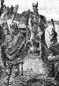

Katliamları nedeniyle sürgüne gönderilen bir kanun kaçağı olan Kızıl Erik (950-1003), daha sonra bir kaşif olmuş ve Grönland Adası’nda ilk Viking kolonisini kurmuştur. Onun yolculukları bilinen dünya haritasını genişletmiş ve oğlu Leif’in (970-1020) Amerika’yı keşfinin önünü açmıştır.

Erik, Norveç’te doğmuş ve babası Thorvald bir dizi cinayete adı karıştığı için sürgüne gönderildikten sonra buradan ayrılmak zorunda kalmıştır. Aile daha sonra, Erik’in Tjodhilde adında bir kadınla evlenip dört çocuk sahibi olacağı İzlanda’ya göç etmiştir.
982 yılında mülk kavgası nedeniyle iki İzlandalı’yı öldürmesinin ardından Erik’in İzlanda’ya girmesi üç yıl süreyle yasaklanmıştır. Bunun üzerine bir avuç taraftarı ile birlikte bir Viking yelkenlisine atlamış ve batıya açılmıştır. Sonunda Grönland’a gelir. Erik’in bulduğu bu adanın iklimi o dönemde günümüze göre daha ılımandı ve dolayısıyla tarım yapılması için de uygundu Bu nedenle adaya “Yeşil Topraklar” anlamına gelen Greenland (Grönland) denmiştir.
Erik yasağı bitince İzlanda’ya döner ve Grönland’a yerleşmek isteyen beş yüz adam toplar. 986 yılında inekleri, koyunları, keçileri ve domuzları ile birlikte denize açılırlar. Yolculuğun sonunda gruptakilerin ancak yarısı hayatta kalmayı başarır. Batı yerleşimi ve daha küçük olan doğu yerleşimi olmak üzere ikiye bölünen koloninin nüfusu, çok geçmeden 3 bin kişiye ulaşacaktır.
Erik’in oğlu Leif, beladan uzak durarak aile geleneğini bozmuş ve Hıristiyanlığı benimsemiştir. 1000 senesinde Hıristiyan misyonerlerle birlikte babasının kolonisine gitmiştir. Misyonerler burada ilk Hıristiyan kilisesini kurmuş ve adanın pagan nüfusunu Hıristiyan yapmışlardır.
Erik’in yaşamı hakkında yegane tarihi kaynak olan İzlanda destanları bunun dışında pek az bilgiye yer vermektedir. Grönland’da yayılan bir veba salgının Erik’in ölümüne neden olduğu tahmin edilmektedir. Leif 1000’li yıllarda gerçekleştireceği Amerika keşfi için Grönland’ı bir üs olarak kullanmıştır. O ve yanındakilerin Yeni Dünya’ya ayak basan ilk Avrupalılar olduklarına inanılmaktadır.
Ek Bilgiler
1- Grönland’daki Viking kolonisi yaklaşık 500 yıl ayakta kalmıştır. 15. yy’da ise bilinmeyen bir nedenle terk edilmiştir. 1721 yılında Danimarka tarafından yeniden kurulmuş ve günümüzde Danimarka Krallığı’na bağlı otonom bir ülke olarak varlığını sürdürmektedir..
2- Leif Eriksson, bulduğu topraklara Vinland (Norveç dilinde Şarap Toprağı) adını vermiştir. Kurduğu yerleşiminin Nova Scotia ya da Newfoundland civarında olduğu tahmin edilmektedir. Bu yerleşim üç yıl kadar varlığını sürdürmüş, ardından terkedilmiştir. Vikinglerin bu topraklara Vinland adını vermelerinin nedeni Kuzey Amerika sahil şeridinde keşfettikleri küçük bir meyveyi şaraplık üzüm sanmalarıdır.
3- Erik’in adında geçen kızıl kelimesinin kaynağı belirsizdir. Büyük ihtimalle saçı ve sakalının rengine ya da tez canlı karakterine bir göndermedir.